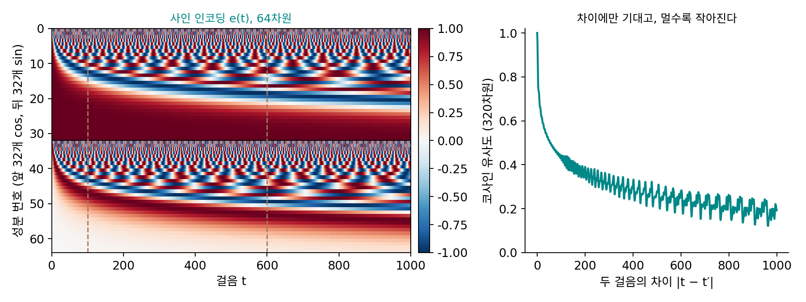

시간 넣기: 잡음 수준을 사인 인코딩으로 펴서 블록마다 더한다
합성곱을 배우며 잡음을 걷는 가장 좋은 커널이 잡음 크기마다 달랐던 것을 보았다. 잡음이 옅으면 바로 옆 칸만 조금 섞는 좁은 커널이, 짙으면 넓고 납작한 커널이 좋았고, 한 잡음 크기에서 배운 커널을 다른 크기에 걸면 아무것도 안 하느니만 못했다. 잡음 예측 신경망은 1000가지 잡음 수준을 신경망 하나로 맡는다. 그러니 지금 어느 수준인지 알려 줘야 한다. 그런데 걸음 t는 0부터 999까지의 숫자 하나이고, 신경망은 칸이 수천 개, 채널이 수백 개다. 숫자 하나를 어디에 어떤 꼴로 넣어야 할까?
역사: 정규화 층에, 출력에, 그리고 모든 블록에
잡음 수준을 신경망에 알리는 자리는 처음부터 정해져 있지 않았다. 송과 에르몬의 2019년 모델은 잡음 크기를 정규화 층에서만 받았고, 이듬해 고친 판은 출력에서만 잡음 크기를 반영했다. 호, 자인, 아빌의 2020년 DDPM 논문은 이 차이를 적어 두었다. 자신들은 「트랜스포머의 사인 위치 임베딩을 더해 모든 층을 t로 조건 지었다」는 것이다.
사인 위치 임베딩은 원래 문장 속 낱말의 자리를 알리려고 만든 것이다. 2017년 바스와니(Ashish Vaswani)와 동료들의 트랜스포머는 낱말 순서를 스스로 알지 못해서, 자리 번호를 빠르기가 다른 사인과 코사인 값 여러 개로 펴서 낱말 벡터에 더했다. DDPM 은 낱말의 자리 번호 대신 걸음 번호 t를 같은 꼴로 폈다.
숫자 하나를 여러 빠르기로 펴기
시계를 떠올리자. 시침 하나만으로도 시각을 알 수 있지만, 3시 정각과 3시 5분은 시침이 2.5°밖에 다르지 않다. 그래서 시계는 빠르기가 다른 바늘을 여럿 둔다. 시침은 굵은 위치를, 분침은 그 사이의 세밀한 위치를 알려 준다. 걸음 t도 한 숫자로 넣는 대신, 빠르기가 다른 바늘 여러 개의 각도로 펴서 넣는다. ComfyUI 의 timestep_embedding(Stable Diffusion 1.x 에서 320개)은 이렇게 계산한다.
가장 빠른 바늘은 f₀ = 1로 6.28걸음마다 한 바퀴를 돌고, 가장 느린 바늘은 f₁₅₉ = 1.06 × 10⁻⁴로 한 바퀴에 59,317걸음이 걸려 1000걸음 동안 거의 움직이지 않는다. 그 사이의 빠르기는 등비수열로 고르게 깔린다. 빠른 바늘은 이웃한 걸음을 가르고, 느린 바늘은 굵은 위치를 알려 준다. 코사인과 사인을 짝으로 두었으니 바늘마다 각도를 원 위의 점으로 적은 셈이고, 그래서 e(t)의 길이는 t와 상관없이 늘 √160 = 12.65다.
두 걸음의 사인 인코딩이 얼마나 닮았는지 코사인 유사도로 재 보자. 걸음 100과 101은 0.973, 100과 110은 0.677, 100과 600은 0.279다. 가까운 걸음은 닮고 먼 걸음은 덜 닮는다.

신경망은 이 벡터를 바로 쓰지 않는다. 작은 MLP(320 → 1280 → 1280)에 한 번 통과시켜 시간 벡터 m(t)를 만들고, 합성곱 블록마다 이 벡터를 그 블록의 채널 수로 바꾸는 층을 하나씩 두어 특징 지도에 더한다.
더하는 값은 채널마다 하나이고, 그 채널의 모든 칸에 똑같이 더한다. 걸음이 바뀌면 채널마다 문턱이 올라가거나 내려가는 셈이다. 다음 비선형 함수를 지나면서 어떤 채널은 켜지고 어떤 채널은 꺼지니, 같은 합성곱 가중치가 잡음 수준에 따라 다른 커널처럼 일한다. 이처럼 잡음 수준을 사인 인코딩과 MLP로 펴서 블록마다 넣는 벡터를 시간 임베딩 (잡음 수준을 신경망이 읽기 좋은 벡터로 편 것 / timestep embedding)이라 한다.
ML에서: 시간 벡터에 다른 조건도 얹는다
Stable Diffusion 1.x 에서 시간 MLP 의 매개변수는 2,050,560개이고, 잔차 블록 22개가 저마다 시간 벡터를 자기 채널 수로 바꾸는 층을 하나씩 가진다. SDXL 은 같은 자리에 글 인코더의 문장 벡터와 그림 크기 정보를 함께 펴서 시간 벡터에 더한다(ComfyUI 설정 adm_in_channels 2816). 시간 벡터가 「그림 전체에 한꺼번에 거는 조건」의 통로가 된 것이다. 더하는 대신 정규화한 특징에 시간 벡터로 정한 배율을 곱하고 치우침을 더하는 꼴도 있다(ComfyUI 의 use_scale_shift_norm). 트랜스포머로 짠 디퓨전 모델은 이 꼴을 키워 쓰는데, 그 이야기는 디퓨전 트랜스포머에서 한다.
문제 7. 바늘 세 개짜리 시계
시침은 1분에 0.5°, 분침은 1분에 6°, 초침은 1분에 360°를 돈다. (가) 3시 00분 00초와 3시 05분 00초에서 세 바늘의 각도 차이는 각각 얼마인가? (나) 3시 00분 00초와 4시 00분 00초에서는? (다) 바늘 하나만 남겨야 한다면 무엇을 남기겠는가?

(가)는 시침 2.5°, 분침 30°, 초침은 둘 다 12시 방향이라 0°예요. (다)는 분침이요. 차이가 30°로 가장 크게 나니까요.

(나)도 계산해 봐요.

분침은 한 시간에 360° 돌아서 제자리, 초침도 제자리라 0°예요. 시침만 30°고요. 분침만 남기면 3시와 4시를 못 가르네요.

빠른 바늘은 가까운 시각을 잘 가르는 대신 한 바퀴 돌면 같은 자리로 돌아와. 느린 바늘은 멀리 떨어진 시각을 가르는 대신 가까운 시각은 거의 같고. 하나로는 둘 다 못 해.

바늘 하나의 위치를 숫자로 적으려면 수가 몇 개 필요할까요?

각도 하나로 적으면 359°와 1°가 멀어 보이니까, 원 위의 점으로 (cos, sin) 두 개요. 그럼 바늘 셋이면 수 여섯 개로 시각을 적는 거고, 사인 인코딩은 빠르기가 다른 바늘 160개를 수 320개로 적은 거네요.
학기 일정표에 주차랑 요일을 같이 적는 거랑 같네요. 요일만 보면 몇 주째인지 모르고, 주차만 보면 오늘이 무슨 요일인지 모르니까요.
문제 8. 차이만 남는 내적
320개짜리 사인 인코딩 e(t)에 대해 (가) 두 걸음의 내적 e(t)·e(t′)이 두 걸음의 차이 t − t′에만 기댐을 보여라. (나) 그렇다면 e(500)과 e(600)의 코사인 유사도는 어느 두 걸음의 것과 같은가? (다) e(900)과 e(999)는? (위젯 2에 두 걸음을 넣어 확인해 보자.)
걸음 500과 600은 둘 다 짙은 잡음 쪽이라 비슷할 테니까, 100과 101처럼 0.97 근처 아닐까요?
내적을 성분별로 적어 봐요. 같은 바늘의 코사인끼리, 사인끼리 곱해서 더하면 무엇이 되죠?
cos(fᵢt)cos(fᵢt′) + sin(fᵢt)sin(fᵢt′) = cos(fᵢ(t − t′))예요. 그러니까 내적은 Σᵢ cos(fᵢ(t − t′))이고, 차이에만 기대요. 길이는 늘 √160이라 코사인 유사도도 차이에만 기대고요.

그럼 500과 600은 0과 100, 100과 200과 같아야 하네요. 위젯에 넣으니까 0.443이에요. 0.97은 한참 틀렸어요. 걸음이 100이나 떨어졌으니까요.

(다)는 차이가 99라서 100과 199랑 같아. 0.443이야. 사인 인코딩은 「짙은 잡음끼리」라는 건 모르고 걸음 사이의 거리만 알아.

그래요. 짙은 잡음끼리는 비슷한 일을 해야 한다, 같은 판단은 뒤의 MLP 와 신경망이 학습으로 정해요. 사인 인코딩은 걸음을 서로 가를 수 있게 펴 줄 뿐이에요.
삼각함수 덧셈정리가 이렇게 쓰이네요. 회전 행렬 두 개를 곱하면 각도의 차만 남는 것과 같아요.
문제 9. 시간을 주지 않은 신경망
장난감 실험의 U-Net 을 시간 넣는 법만 바꿔 세 번 학습했다. (A) 시간을 주지 않는다. (B) t/1000 을 그림과 같은 크기의 상수 채널 하나로 만들어 입력에 이어 붙인다. (C) 본문처럼 사인 인코딩 → MLP → 블록마다 더하기. 시험 그림 2,000장에 잡음을 새로 뽑아 섞고, 되돌린 원래 그림 x̂₀의 칸당 제곱 오차를 쟀더니 걸음 100에서 (A) 0.0053, (B) 0.0053, (C) 0.0052, 걸음 300에서 0.032, 0.032, 0.030, 걸음 600에서 0.232, 0.179, 0.173이었다. 또 걸음 300의 그림을 넣으면서 신경망에 걸음을 100이라고 틀리게 알려 주면, 섞인 잡음을 맞힌 오차가 (B)는 0.021에서 0.317로, (C)는 0.020에서 0.565로 커졌다. (가) 시간을 주지 않은 신경망은 어떻게 잡음 수준이 다른 그림을 처리하는가? (나) 결과를 어떻게 읽어야 하는가?
시간을 안 준 (A)가 (C)랑 거의 같네요. 잡음 수준을 모르면 커널을 못 고른다고 했는데, 실험이 잘못된 거 아니에요?
잡음이 섞인 숫자 그림 한 장만 보고, 잡음이 얼마나 섞였는지 짐작할 수 있을까요? MNIST 그림의 배경은 어떤 값이었죠?
배경은 모두 −1이에요. 그러니까 배경 칸들이 얼마나 흔들리는지 보면 잡음 크기가 바로 어림돼요. 칸이 천 개가 넘으니 꽤 정확하게요. 그림 자체가 잡음 수준을 말해 주고 있었네요.
그런데 걸음 600에서는 (A)가 0.232로 확 나빠져요. 거기서는 왜 어림이 안 되죠?
걸음 500, 600, 700에서 원래 그림이 남는 비율과 잡음 크기를 적어 볼까요? 각각 0.28과 0.96, 0.16과 0.99, 0.08과 1.00이에요. 그림에서 읽히는 것은 둘 가운데 어느 쪽이죠?
전체 흔들림, 곧 잡음 크기 쪽이요. 그런데 잡음 크기는 0.96에서 1.00으로 거의 안 바뀌고, 남는 비율은 0.28에서 0.08로 세 배 넘게 바뀌어요. 원래 그림을 되돌릴 때는 남는 비율로 나누니까, 그걸 그림에서 못 가르면 오차가 커지는 거예요. 짙은 잡음일수록 그림이 자기 잡음 수준을 덜 말해 줘요.

그럼 (B)·(C)에 걸음을 틀리게 알려 줬을 때 오차가 15배, 28배 커진 건, 시간을 받은 신경망은 그림에서 어림하는 대신 받은 걸음을 믿고 일한다는 거네요. 받은 값을 그만큼 쓰고 있었으니 넣어 준 보람이 있는 거고요.
그래요. 2025년에 쑨(Qiao Sun), 허(Kaiming He)와 동료들도 여러 디퓨전 모델에서 잡음 조건을 빼 보았어요. 대부분은 조금만 나빠졌고 어떤 것은 오히려 나아졌다고 보고했어요. 그림에서 잡음 수준을 꽤 정확히 읽을 수 있다는 거죠. 하지만 DDIM 이라는 샘플러로 뽑은 그림의 질 점수(FID, 낮을수록 좋다)는 3.99에서 40.90으로 무너졌어요. 잡음 수준을 그림에 맡겨도 되는지는 모델과 뽑는 방법에 따라 달라요.
통계 수업에서 분산을 모를 때 표본으로 어림해서 쓰는 거랑 같네요. 표본이 많으면 아는 거랑 비슷하지만, 표본이 적거나 잴 것이 작으면 차이가 커져요.